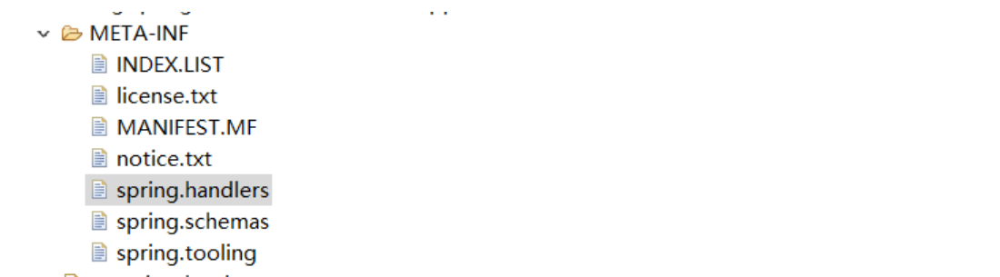

关于xml命名空间
XML 命名空间 是由国际化资源标识符 (IRI) 标识的 XML 元素和属性集合；该集合通常称作 XML“词汇”。在XML中，元素名称是由开发者定义的，当两个不同的文档使用相同的元素名时，就会发生命名冲突。举个简单的栗子，命名空间很像 Java 中的包，不同的包下面可以存放相同的类名，只要在引入类时前面加上类的包就可以避免同名类的冲突。
Spring常用配置头
<?xml version="1.0" encoding="UTF-8"?>
<beans xmlns="http://www.springframework.org/schema/beans"
xmlns:xsi="http://www.w3.org/2001/XMLSchema-instance"
xmlns:context="http://www.springframework.org/schema/context"
xmlns:mvc="http://www.springframework.org/schema/mvc"
xsi:schemaLocation="http://www.springframework.org/schema/mvc http://www.springframework.org/schema/mvc/spring-mvc-3.1.xsd
http://www.springframework.org/schema/beans http://www.springframework.org/schema/beans/spring-beans-3.0.xsd
http://www.springframework.org/schema/context http://www.springframework.org/schema/context/spring-context-3.1.xsd">
<!-- 定义跳转的文件的前后缀 ，视图模式配置-->
<bean class="org.springframework.web.servlet.view.InternalResourceViewResolver">
<property name="prefix" value="/WEB-INF/view/" />
<property name="suffix" value=".jsp" />
</bean>
</beans>
配置头解析
xmlns="http://www.springframework.org/schema/beans"
//声明xml文件默认的命名空间，初始化beans
xmlns:xsi="http://www.w3.org/2001/XMLSchema-instance"
//声明XML Schema实例，声明后就可以使用schemaLocation属性
xmlns:context="http://www.springframework.org/schema/context"
//绑定context命名空间，绑定之后便可使用<context:component-scan base-package=""/>等context为前缀的的元素。
schemaLocation提供了一个xml 命名空间到对应的XSD(Xml Schema Definition)文件的一个映射，它的值由一个或多个URI引用对组成，
两个URI之间以空白符分隔（空格和换行均可）。第一个URI是定义的 XML命名空间的值，第二个URI给出Schema文档的实际位置，
Schema处理器将从这个位置读取Schema文档，该文档的targetNamespace必须与第一个URI(XML命名空间的值)相匹配。
在xsi:schemaLocation后面配置的字符串都是成对的，前面的是命名空间的URI，后面是xsd文件的URI；
如何找到Spring命名空间
Spring的命名空间uri和xsd文件地址在Spring的依赖中都可以找到，以spring-context为例：
在spring-context的jar包里，有META-INF文件夹，如下

在spring.handlers中保存着spring-context的命名空间，对应xml文件头的命名空间

在spring.schemas中保存着对应的xsd文件uri，以及在本地对应的文件位置

Spring中xml文件的校验
Spring默认在启动时是要从配置的命名空间的位置加载XSD文件来验证xml文件的，所以如果有的时候断网了，或者一些开源软件切换域名，那么就很容易碰到应用启动不了。
为了防止这种情况，Spring提供了一种机制，即默认从本地加载XSD文件，当本地没有时才根据实际的URI去联网获得。
总结
现在对于spring配置文件的头部有了一定的了解，以后也可以根据需求，添加对应的命名空间，schemaLocation。
在写schemaLocation时，命名空间后面对应的xsd文件，可以不加版本号，让spring加载本地版本对应的xsd文件。